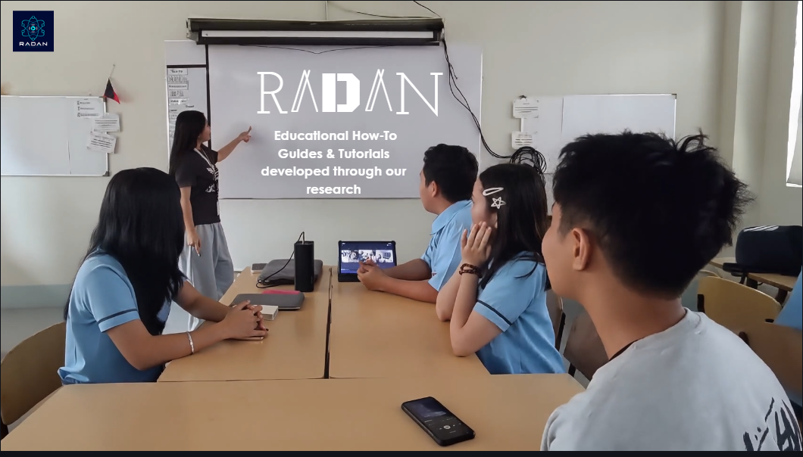
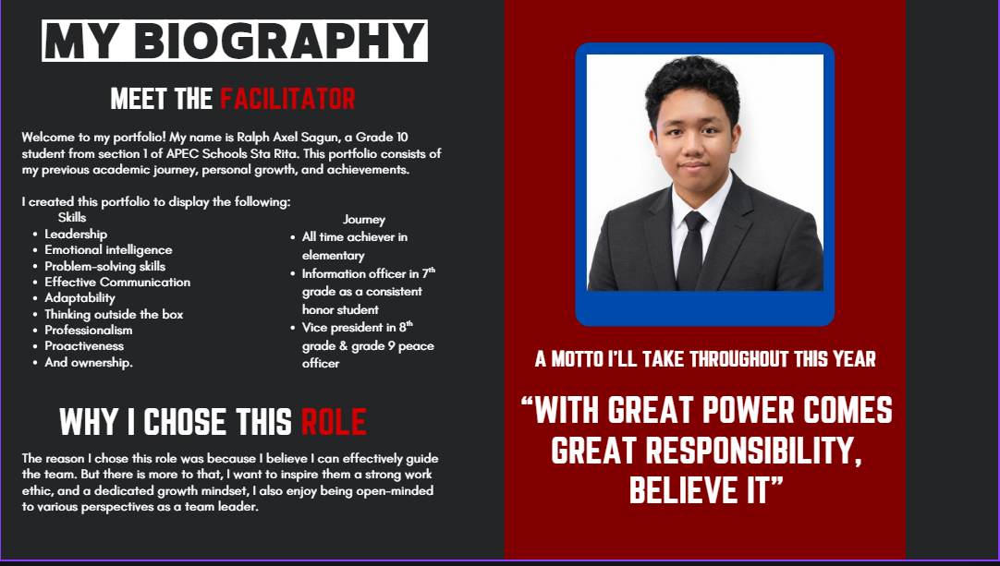

LEARN AND CREATE
ONE STREAM AT A TIME
Exploring how educational streaming can make learning clearer, more engaging, and easier to understand.

Exploring how educational streaming can make learning clearer, more engaging, and easier to understand.
This website is about providing comprehensive resources and tutorials on diverse topics, from essential study concepts based on research, to casual, personality-driven streaming. Think of our website like a platform consisting of our projects that you may take inspiration of, and see how we will plan to make a feasible streaming website!
You can learn all sorts of information from our tutorials! Especially how to do Basic Research or implement on your websites what you've learned from our streams into your websites! As of 11/9/2026, we want to have our content focus on sharing what we learn about other subjects, and even JavaScript like in this button below, we use JavaScript switch for that!
You should choose this reliable webpage because it is informative, reliable
and
user-friendly. At most, our team has designed this website for learners like you to feel encouraged, safe,
and
related to understanding this revolutionary programming language.
We want to help you learn JavaScript and streaming in a fun and interactive way, so you can apply
your
knowledge to your
projects!
This website is designed for beginners, students, and curious learners who want to understand JavaScript and streaming in a simple, friendly way.
You can expect clear explanations, beginner-friendly examples, and helpful guidance on how JavaScript supports modern web development and digital content.
To make learning JavaScript and streaming more approachable, practical, and inspiring for everyday learners and future creators.
To build a learning space where students can grow confident, creative, and ready to explore the world of coding and online media.
These are the projects you will see
Throughout the website, think: "So this is how they do it"
The following includes what will be reflected in our methodology:


Meet the people behind our research, content, and final project.
Facilitator

My journey with RADAN has been challenging, but it has also shown me how much I can grow when I remain committed. From the first activity I worked on to our most recent project, even when things did not go as planned, I continued to learn, contribute, and help strengthen the foundation I built brick by brick.
As RADAN moves forward, I will continue to uphold the principles of a Growth Mindset and use what I have learned to help turn our future goals into meaningful achievements.
Lastly, I want to share that this is about more than submitting deliverables; it is about creating something new within yourself, because learning is an iterative process.
"Do not go where the path may lead; go instead where there is no path and leave a trail.”
- Ralph Waldo Emerson
Streaming is a way of watching videos, listening to music, or viewing other content through the internet without downloading the whole file. It allows people to watch, listen right away, or view images, making it easier and faster to access content.
After comparing Twitch, Facebook, and YouTube, our group chose YouTube because it
provides a simple and accessible platform for viewing and sharing different types of video content. Aside
from how familiar our experience is with YouTube, it is compatible with various devices, including phones,
tablets, laptops, and computers, making it convenient for users to discover more of our content! It also has
an organized interface with features such as search, subscriptions, notifications, and recommendations that
help users easily find content that interests them. Additionally, YouTube supports high video quality, from
144p up to 4K and 8K on supported videos, along with high-quality audio. This is why YouTube is a suitable
platform for our project because it is accessible, easy to navigate, and designed specifically for video
content.
Moving forward to the types of streaming content. Based on our research, there are lots of content types such
as video game walkthroughs, how-to guides and tutorials, and educational streams. For this project, we set
our minds on how-to guides and tutorials. Tutorials are instructional videos that provide viewers with clear,
step-by-step guidance on how to complete a task or learn a practical skill. This type of content lets viewers
follow along at their own pace and apply what they have learned. Our brainstorming process was to focus on
JavaScript, since our group was also learning about the elements of JavaScript syntax.
Our group chose YouTube because it is accessible, easy to navigate, compatible with different devices, and designed specifically for video content.
Educational videos reach a broad group of learners. Gaming walkthroughs primarily appeal to younger audiences and are especially open to all ages. Based on these differences, we chose how-to guides and tutorials because RADAN relates to watching streams to meet learning needs, and we wanted to explore how unique tutorial videos can get.
The survey shows that the main audience is teenagers and Junior High School students aged 13–18. Most viewers watch educational or tutorial content several times a week to understand difficult topics, complete schoolwork, learn new skills, and satisfy their curiosity.
In summary, our group identified that a good stream must be informative, entertaining, engaging, and respectful. The stream must be accessible, have clear audio and video quality, excellent pacing between timestamps, and understandable narration or lively storytelling. The streamer should come up with creative, bright, and eye-catching content ideas while staying active in interacting with the audience. For the titles of a stream, they could be very interesting or intriguing yet also honest and not gullible as the viewer clicks on the stream they would like to watch. Most importantly, our group believes that information being stated could be counted as reliable, and could as well be useful for using citations.
Our group planned several steps to develop our ideas until we arrived at the final content that everyone fully agreed on. First, we researched common and possible types of streaming content. Then, we compared the features, advantages, and disadvantages of each type and analyzed its potential audience. After that, we chose a content type based on our members' preferences, attitudes, beliefs, perspectives, ideas, and needs. Once the content type was settled, we compared the most convenient and accessible platforms that all group members were familiar with. We refined our options by organizing and considering the full range of propositions and concepts. In conclusion, we chose our final content and platform based on our discoveries.
Our main goal for streaming is to present realistic and educational concepts in a simple, clear, and beginner-friendly way.
As much as possible, we would want to make technical and project-related topics easier and clearer for students to understand.
We would really like to help students develop relevant, functional skills, so our tutorials and how-to guides should be instructional.
We would also like to achieve the characteristics of a good stream, so that our viewers will be interested in commenting on or interacting with our easy-to-understand content.
Another important goal is to build a distinctive brand that reflects our purpose and values.
One of our significant goals is to develop a strong and cohesive brand identity that consistently connects with our target audience.
We will initiate and thoughtfully plan to create a unique and empowering brand name, logo, visual branding, and other essential components.
We also aim to make our website and streaming content accessible and convenient to navigate on different devices, including cellphones, tablets, laptops, and computers. This will allow our viewers to comfortably access our tutorials regardless of the device they use.
For our future development, we plan to ceaselessly improve the quality of our streaming content. We will focus on providing more detailed explanations, better visuals, higher quality audio, and more effective editing. If we ever plan to expand our tutorials into more specific topics, examples would be "how to enjoy planning" or "working on a project".
And last but not least, we wouldn't forget about wanting to enhance and pursue viewer engagement. Rather than only prioritizing the number of views, we want to build a supportive learning community where viewers are encouraged to comment, ask questions, give suggestions, and even recommend future topics. In summary, our goal is to create content that viewers find helpful enough to interact with and return to.
Our streaming setup consists of several tools and pieces of equipment that work together to create a clear, organized, and reliable livestream. Each component has a specific role, from processing and managing the livestream to capturing high-quality video and audio. Together, these tools support our goal of creating educational, understandable, and engaging tutorial content for our viewers.
First, we have the laptop, which runs OBS Studio and manages the livestream. Its performance matters because streaming involves processing several factors, such as encoding, resolution, frame rate, and scene complexity. The encoder processes the video for streaming. Scene complexity refers to the number of elements OBS has to process, such as cameras, text, and overlays. So, the laptop needs enough performance to handle these factors smoothly. We chose to use a laptop because it provides the processing power needed to record, manage our livestream, and support our real-time group collaboration.
Next, we have the camera, which is used to capture video of the presenter during recording. According to YouTube Help, there is no “one size fits all” camera because the appropriate choice depends on what the creator wants to achieve. Point-and-shoot cameras can capture Full HD or 1080p video, while mobile-device cameras can also serve as a starting option. We chose to use a camera because it allows us to clearly present our tutorial visually, while also allowing us to invest our money in other future plans.
For the microphone, we use it to capture the presenter's voice during recording. According to YouTube Help, good sound is essential for videos because viewers are generally less accepting of poor audio quality. We chose a wireless lavalier microphone because clear audio is essential for viewers to understand our explanations, instructions, and activities.
We also have headphones, which allow us to hear the audio properly during recording and streaming. They help us monitor the sound and make sure that the audio is being captured and played correctly.
Lastly, we have the internet connection, which is important for our livestream because data needs to be uploaded and transmitted during the broadcast. According to the NJ Office of Broadband Connectivity, a fast internet connection involves the speed at which data is uploaded and transmitted. Having a reliable internet connection therefore helps us maintain a stable livestream and reduces difficulties while broadcasting our tutorial in real time.